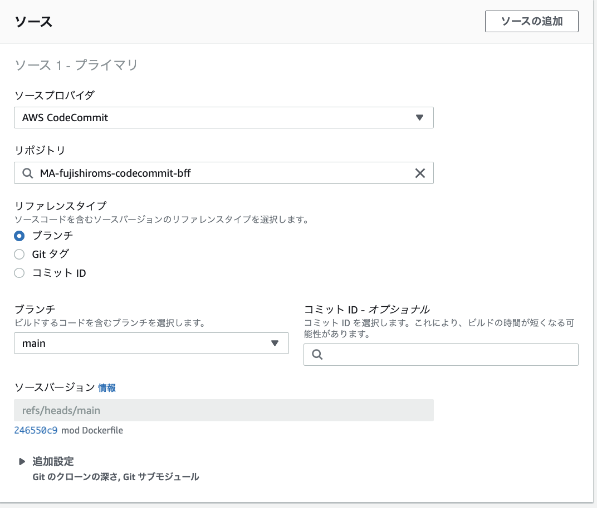
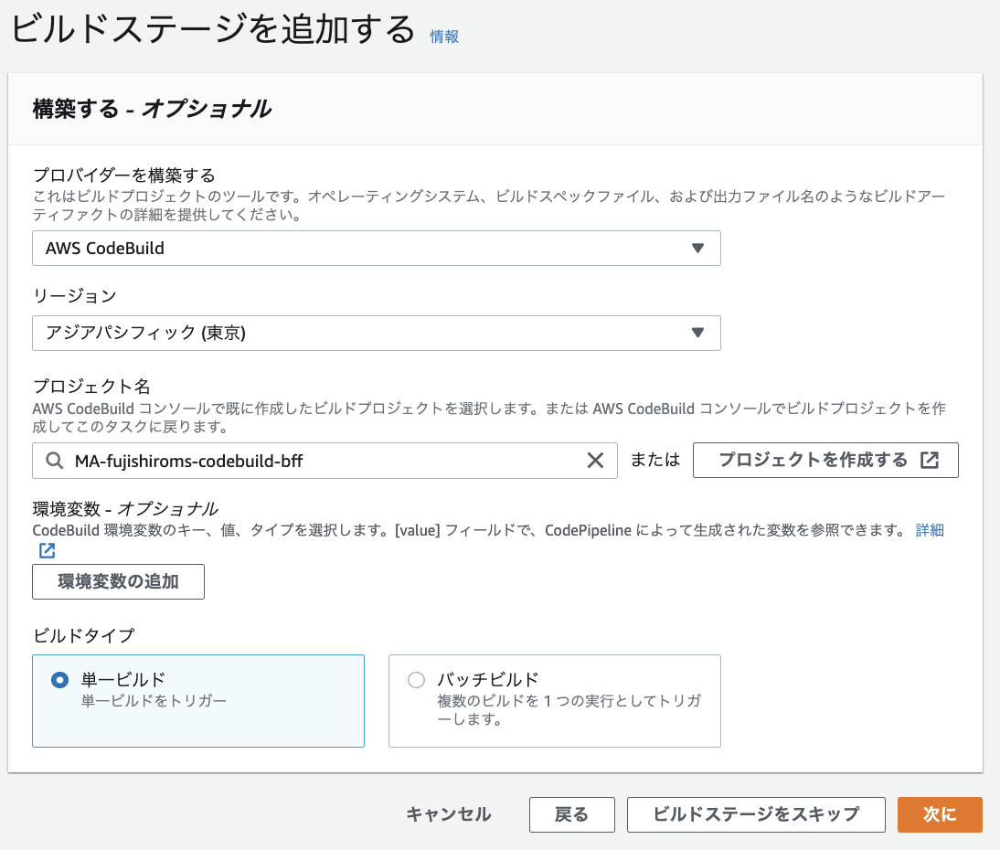

2. AWS Code Seriesを利用したCICD環境¶
2.1. GitHubとSpringPJの連携¶
2.1.1. Git hubでrepository作成¶
git hubでリポジトリを新規作成する
MisakiFujishiro/ecs_backend_for_front

2.1.2. Java PJ作成¶
STSでSpring Starter Projectを作成

2.1.3. terminalでGitHubへpush¶
ターミナルを開いて、作成したプロジェクトのディレクトリに移動
cd [YOUR_STS_PJ]
実行したディレクトリ以下のファイルがgitで管理される
git init
STSで作成された各種ファイルをaddとcommit
git add . git commit -m "first commit"
メインブランチ作成
git branch -M main
現在のローカルリポジトリをリモートリポジトリに追加
git remote add origin https://github.com/[YOUR_REMOTE_REPO].git
リモートリポジトリにpush
git push -u origin main
2.2. codeCommitとGitHubのミラーリング¶
2.2.1. CodeCommitの作成¶
CodeCommmitのページから、レポジトリを作成する。 設定項目は、リポジトリ名のみ。
2.2.2. githubのミラーリング¶
githubの変更を検知して、CodeCommitに反映されていることを確認する。
2.2.2.1. SSHキーの場合¶
実施項目は以下
SSHキーをローカルPCで作成
IAMユーザーに公開鍵を登録
githubに秘密鍵を登録
githubにミラーリングの設定
詳細は、別ページ
2.2.2.2. HTTPS認証の場合¶
実施項目は以下
codecommitへのpull pushの権限を持つIAMユーザーを作成
IAMのページ>セキュリティ認証情報>AWS CodeCommitのHTTPS Git認証情報を払い出す(USERNAMEとPASSWORDを記録する)
CodeCommitのリポジトリでHTTPSのURLをコピー
gitlab>Setting>リポジトリ>Mirroring repositoriesから、設定
CodeCommitのリポジトリでコピーしたURLの
https://の後ろにIAMで払い出したユーザー名@を挿入Authentication methodでPasswordを選択して、IAMで払い出したパスワードを挿入
2.3. CodeBuildによるBuild設定¶
2.3.1. CodeBuildのプロジェクト作成¶
CodeBuildのプロジェクト名
ソース
CodeCommitとの紐付け
対象のブランチ指定

CodeBuildの環境設定
Dockerを利用する場合特権付与を忘れない
2.3.2. IAMポリシーの変更¶
新規で作成されたサービスロールにECRへアクセスするためのポリシーAmazonEC2ContainerRegistryPowerUserを付与する。
2.3.3. buildspec.yml作成¶
version: 0.2
phases:
pre_build:
commands:
- echo Logging in to Amazon ECR...
- $(aws ecr get-login --no-include-email --region ap-northeast-1)
- AWS_ACCOUNT_ID=$(echo ${CODEBUILD_BUILD_ARN} | cut -f 5 -d :)
- REPOSITORY_URL=${AWS_ACCOUNT_ID}.dkr.ecr.ap-northeast-1.amazonaws.com/ma-fujishiroms-ecr-bff
- IMAGE_TAG=$(echo ${CODEBUILD_RESOLVED_SOURCE_VERSION} | cut -c 1-7)
build:
commands:
- echo Building the Docker image on `date`
- docker build --no-cache -t ma-fujishiroms-ecr-bff:${IMAGE_TAG} .
- docker tag ma-fujishiroms-ecr-bff:${IMAGE_TAG} ${REPOSITORY_URL}:${IMAGE_TAG}
post_build:
commands:
- echo Pushing the Docker image on `date`
- docker push ${REPOSITORY_URL}:${IMAGE_TAG}
2.4. CodePipelineによるデプロイ自動化¶
codeCommitの変更を契機して、ECSへのリリースまでの一連の流れを作成。
2.4.1. buildspec.ymlの変更¶
imagedefinitions.jsonを出力するためにbuildspec.ymlに以下の文言を追加
コンテナ名とECRのURIをimagedefinition.jsonに書き込む
post_build:
commands:
- printf '[{"name":"MA-fujishiroms-container-private","imageUri":"%s"}]' $REPOSITORY_URL:$IMAGE_TAG > imagedefinitions.json
artifacts:
files: imagedefinitions.json
2.4.2. codepipelineの作成¶
sourceステージの作成
buildステージの作成

deployステージの作成
2.4.3. 動作確認¶
githubのmainブランチにpushすると以下のようにCodepipelineが実行されて、ECSに新しいタスクがリリースされる